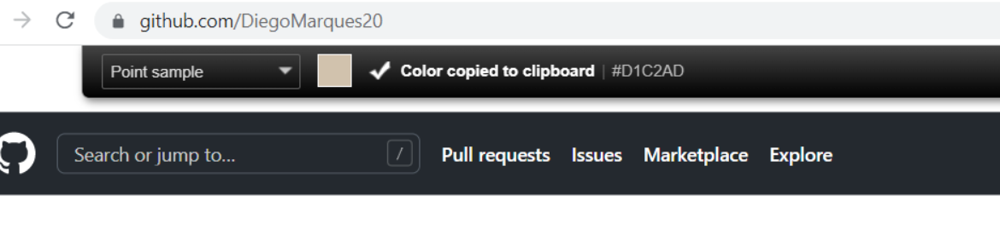

O primeiro é o Above color, pois conseguimos montar a paleta de cores e utilizar os códigos e conseguimos também inserir uma imagem e ele informar a leitura da paleta de cores que está sendo utilizada.
Outro site que podemos utilizar, é o Paletton, nele conseguimos ver um exempo de site utilizando as cores selecionadas.
Depois de instalarmos a versão Colorzila no Google Chorme, clicamos em extensões e depois em Page Color Picker Active e agora é só passar o mouse sobre a cor e clicar e o código do mesmo vai aparecer na parte de cima já copiado
